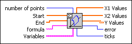
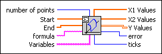
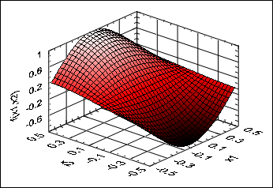

Eval y=f(x1,x2) VI
Owning Palette: 1D & 2D Evaluation VIs
Requires: Full Development System
Calculates a 2D array of function values defined on a grid.

 Add to the block diagram Add to the block diagram |
 Find on the palette Find on the palette |
Owning Palette: 1D & 2D Evaluation VIs
Requires: Full Development System
Calculates a 2D array of function values defined on a grid.

| Add to the block diagram |
Find on the palette |
 |
number of points describes the number of grid points for both variables. The default is 25. |
 |
Start specifies the start points of both variables, that is, an array of length 2. The default values are (0, 0). |
|
End specifies the end points of both variables, that is, an array of length 2. The default values are (1, 1). |
 |
formula is a string representing a function definition of exactly two different variables. The formulas can contain any number of valid variables. |
 |
Variables is an array of two strings representing the two variables with respect to the naming conventions of the Formula Parsing VIs. The default variables are (x1, x2). |
 |
X1 Values is a 1D array of the used x1 arguments. |
|
X2 Values is a 1D array of the used x2 arguments. |
|
Y Values is the resulting 2D array of the function values. |
 |
error returns any error or warning from the VI. You can wire error to the Error Cluster From Error Code VI to convert the error code or warning into an error cluster. |
 |
ticks is the time effort for the whole calculation of the function values in milliseconds. |
The following illustration shows the visualization of the function
f(x1, x2) = sin(3*x1) * cos(3*x2)
in the interval
(–2, 2) × (–2, 2).
